$$qf_commondoc_header.start$$ $$qf_commondoc_header.end$$
Introduction
This plugin implements the maximum entropy (MaxEnt) data fit method for fluorescence correlation spectroscopy (FCS) or dynamic lightscattering (DLS) data.
The maximum entropy approach is a method from Bayesian statistics, that is suitable to treat ill-conditioned data. For a specific problem such as fitting FCS data, we assume to
know the physical model behind the measured data, and want to find the model parameters.
In this case we can compute a "probability" distribution for the desired parameters,
that allows us to compute an entropy function. The basic idea is to maximise the entropy, constrained by the data.
This is done by introducing a new regularisation parameter, that controls the ratio of both the influence of the data and the entropy on the fit result.
Supported Models
This plugin supports several models that incorporate a MaxEnt distribution 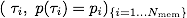
where 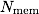 is the number of discretization steps to sample the maximum entropy distribution.
FCS: 3D diffusion with Triplet:
This plugin may be used for FCS data from a confocal microscope with assumed 3D diffusion. The model is:
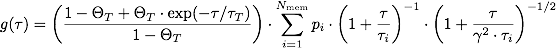
Here 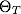 is the triplet fraction and 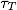
is the triplet lifetime. The parameter 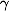 describes the axial ratio of the gaussian laser focus (a common value for confocal microscopes is 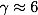).
FCS: 3D diffusion with two blinking components: This model is similar to the first one but has now two blinking components. It may as well be used for FCS data from a confocal microscope with assumed 3D diffusion. The model is:
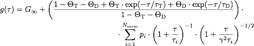
where 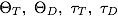 are the corresponding triplet fractions and triplet lifetimes, respectively.
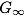 is a offset constant, and is the axial ratio of the laser focus as explained above.
FCS: 2D diffusion with two blinking components: Applicable to FCS data from a confocal microscope with assumed 2D diffusion and 2 blinking components. The model is:
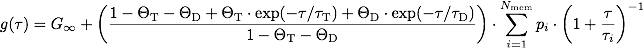
The relevant parameters are basically the same as for the 3D Diffusion with two blinking components, except that the focus ratio is not needed here.
-
DLS: Dynamic Light Scattering: The model is:
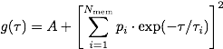
with the parameter A, that describes a unknown baseline count.
-
FCS: Blinking with 3D Diffusion: The model is given by:
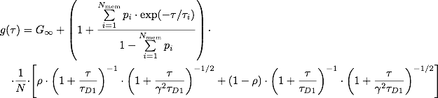
As earlier describes an offset constant.
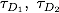 are the two lifetimes, N is the particle number,
the axial ratio of the laser focus, and 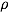 is the fraction of the D1 component.
-
camera SPIM-FCS: 3D Diffusion: The model is given by:
$$bmath:g(\tau)=G_\infty+\frac{1}{\sqrt{\pi}\cdot w_z\cdot a^2\cdot N/V_{\text{eff}}}\cdot\frac{1}{\sqrt{\pi}\cdot w_za^2}\cdot\sum_{i}\rho_i\cdot\left[\mbox{erf}\left(\frac{a}{\sqrt{4D_i\tau+w_{xy}^2}}\right)+\sqrt{4D_i\tau+w_{xy}^2}\cdot\left[\exp\left(-\frac{a^2}{4D_i\tau+w_{xy}^2}\right)-1\right]\right]^2\cdot\left[1+\frac{4D_i\tau}{w_z^2}\right]^{-1/2}$$
$$bmath:V_{\text{eff}}=\frac{\sqrt{\pi}\cdot a^2w_z}{\left(\mbox{erf}\left(\frac{a}{w_{xy}}\right)+\frac{w_{xy}}{\sqrt{\pi}\cdot a}\cdot\left(e^{-(a/w_{xy})^2}-1\right)\right)^2}$$
As earlier describes an offset constant.
$$math:w_{xy}$$ and $$math:w_z$$ are the 1/e2 focus width and height , $$math:a$$ is the pixel size and $$math:N$$ is the particle number
-
camera TIR-FCS: 2D Diffusion: The model is given by:
$$bmath:g(\tau)=G_\infty+\frac{1}{\cdot a^2\cdot N/A_{\text{eff}}}\cdot\frac{1}{a^2}\cdot\sum_{i}\rho_i\cdot\left[\mbox{erf}\left(\frac{a}{\sqrt{4D_i\tau+w_{xy}^2}}\right)+\sqrt{4D_i\tau+w_{xy}^2}\cdot\left[\exp\left(-\frac{a^2}{4D_i\tau+w_{xy}^2}\right)-1\right]\right]^2$$
$$bmath:A_{\text{eff}}=\frac{a^2}{\left(\mbox{erf}\left(\frac{a}{w_{xy}}\right)+\frac{w_{xy}}{\sqrt{\pi}\cdot a}\cdot\left(e^{-(a/w_{xy})^2}-1\right)\right)^2}$$
As earlier describes an offset constant.
$$math:w_{xy}$$ is the 1/e2 focus width, $$math:a$$ is the pixel size and $$math:N$$ is the particle number
Algorithm
In this section we explain the basic concept of this algorithm.
One assumes that in our experiment we have measured 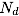 datapoints, that we store in a vector 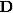.
In the language of maximum entropy analysis we wish to find a "map" 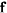 that gives rise
to the measured data, through a linear transform T. This map is what we call the maximum entropy distribution. So we start off with an
dimensional data vector 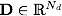, an dimensional fit-result vector 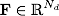 and a 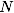 dimensional map-vector
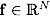 along with a linear transform 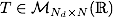 between F and f, such that 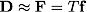
(D contains the experimentally measured data whilst F contains our fit results). Here 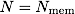
is the number of discretization steps that are used to sample the
maximum entropy distribution that is contained in the vector 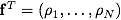. In the relation
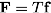
one sometimes refers to the fit result 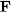 as the restored image. T is for a given model
a constant linear mapping making it clear,
that the task of this algorithm is to find such a maximum entropy map/distribution that creates an
that possibly best matches our measured result in .
Normal fitting routines try to minimize the summed squared deviation between the experimental datapoints and a theoretical model,
by arguing, that the best fit to a given data set must be the one, which minimizes
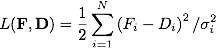
where 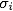 is the standard deviation of the i-th datapoint. If the distribution vector
is properly chosen, namely that is a positive, additive and normalizable distribution function,
one can set up an entropy function for , according to the information theoretical interpretation of entropy, by
assigning:
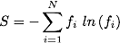
The key idea behind maximum entropy is now to consider a new optimisation problem, namely to maximise a new functional Q, depending
on L and S, which corresponds to a minimisation in the least square sense while at the same time maximising the entropy.
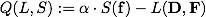
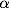 is a new so called regularization parameter, that balances the relative weight of either the entropy term
or the data term L.
Application to FCS
In the case of FCS data, we measure an autocorrelation function
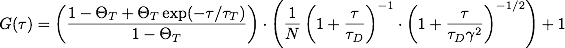
where 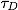 is an effective diffusion time. For multi-species probes we expect several different diffusion coefficients
to be present and hence expand the model to
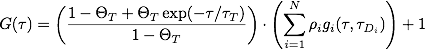 , with 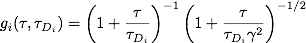
Our approach here is to reinterprete the discrete 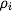 in the sum as a "continuous" distribution 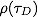 of diffusion times,
that will be peaked at distinct times that correspond to the actual diffusion times of the species, respectively.
This is the map, that we wish to compute via the maximum entropy algorithm.
We conclude, that the i-th component of our data vector can be written as
 and the j-th component of the map-vector as 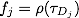.
Due to the given linearity of the problem we can cast the equation above into the matrix form by identifying:
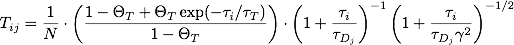
With these assignments we have constructed as required. It should be emphasized, that the concrete form of T and choice of f is
problem specific and has here been shown for the application to FCS data fitting.
and the j-th component of the map-vector as 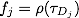.
Due to the given linearity of the problem we can cast the equation above into the matrix form by identifying:
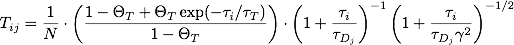
With these assignments we have constructed as required. It should be emphasized, that the concrete form of T and choice of f is
problem specific and has here been shown for the application to FCS data fitting.
Implementation Details
As known from basics maximisation tasks, maximizing can be done by satisfying the condition 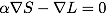
One key aspect of the implementation is the reduction of the higher dimensional problem to the singular space of the given matrix T, by computing the Singular Value Decomposition
of T and exploiting the fact the all important information are preserved when restricting to the smaller dimensional singular space of T compared to ist full size. We remember that
.
The singular value decomposition of a given matrix T, decomposes T in the form 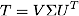 where V is 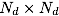 orthogonal matrix and
U is a  orthogonal matrix and 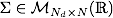 contains all the singular values on its diagonal in decreasing order, such that
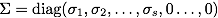 where s is the dimension of the spanned singular space.
This simplifies the problem in such a way as one can now reduce the problem to and s dimensional space by cutting off the additional dimensions.
orthogonal matrix and 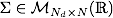 contains all the singular values on its diagonal in decreasing order, such that
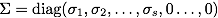 where s is the dimension of the spanned singular space.
This simplifies the problem in such a way as one can now reduce the problem to and s dimensional space by cutting off the additional dimensions.
Furthmore one transforms the Maximum Entropy distribution vector into  by
by
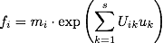
where the 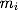 are the initial values for the maximum entropy distribution and
is the new s dimensional vector that from now on is used in the algorithm. Once the algorithm terminates we use the final
and plug it into the equation above to get back the final result for
One can rewrite the maximisation condition in the following way
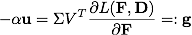
which is the equation we need to solve for .
This is done by a so called Newton-Iteration method, which computes an increment 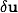
in each iteration by solving the following equation
where is another algorithm parameter that is modified during the runtime to ensure convergence and
is simply the s-dimensional unity matrix.
By some further matrix algebra and eigenvalue analysis the algorithm simplifies the above equation. The details for the remaining steps can be seen
in the paper by Richard K. Bryan.
References
The implementation follows the algorithm form R.K. Bryan. For more details and other application ideas we refer to the following references:
- R.K. Bryan (1990): "Maximum entropy analysis of oversampled data problems", European Biophysics Journal 18(3), 65-174, DOI: 10.1007/BF02427376
- Károly Módos, Rita Galántai, Irén Bárdos-Nagy, Malte Wachsmuth, Katalin Tóth, Judit Fidy und Jörg Langowski (2004): "Maximum-entropy decomposition of fluorescence correlation spectroscopy data: application to liposome–human serum albumin association", European Biophysics Journal 33(1), 59-67, DOI: 10.1007/s00249-003-0343-6
The algorithm uses matrix tools and numerical solvers from the Eigen C++ Template Library for Linear Algebra. For further information on Eigen see:
"http://eigen.tuxfamily.org/index.php?title=Main_Page"